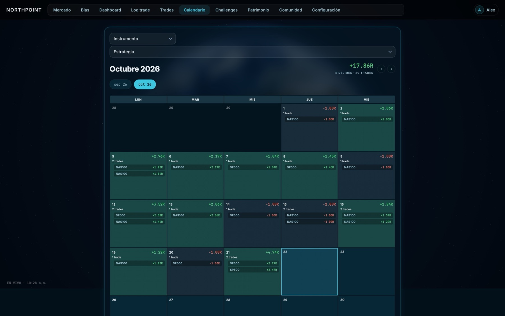

Opera con un sistema que no dependa de tus emociones
La app de escritorio que detecta cada trade, te pide Emoción y captura y te muestra los números honestos. Bias de la mesa incluido.

Cinco ventajas dentro del journal

Conecta tu cuenta de Exness y cada entrada y cada salida se registran solas, con hora y precio. Al entrar y al salir, la app te pide lo que importa: cómo te sientes, por qué entraste y la captura. Tú solo operas.
R del mes, win rate, expectancy, duración media y qué emociones te hacen ganar o perder. Sin hacer cuentas, sin memoria selectiva. Dashboard, calendario y estadísticas por estrategia.
Antes de cada sesión (Asia, Londres y Nueva York) el equipo sube su bias: dirección, captura y análisis. Ves en vivo hacia dónde se inclina la mesa y qué espera cada quien. Toros contra osos.
Kaizen es mejorar un poco cada día. La app arma tus 26 semanas: un objetivo cada día, una meta cada semana y un hito cada mes. Cada objetivo cumplido te da una carta. Metas de disciplina, no promesas de rendimiento.
Discord NORTHPOINT, ranking por balance real y trades del equipo. Al empezar el reto, el herrero te entrega tu katana: despierta diez formas conforme avanzas y su color dice qué tipo de trader eres.
La mayoría no pierde por análisis. Pierde por proceso.
- 1
Las emociones operan por ti
Entras con prisa, sales con miedo y el plan se queda en la libreta. El FOMO y el cansancio deciden más de lo que crees.
- 2
Sin registro no hay mejora
Sin datos de cada entrada y salida, la memoria selecciona: recuerdas los aciertos y repites los errores.
- 3
Un proceso repetible se puede escalar
Reglas escritas que se cumplen en cada trade, medidas cada día. Eso es lo único que se puede mejorar, y lo único que crece.

# NORTHPOINT Journal · detección en vivo cuenta = exness.conectar() bias = mesa.bias("NY") # longs only · 3 toros def al_entrar(trade): journal.pedir("emoción", "motivo", "captura") riesgo.fijar(trade, R=1) def al_salir(trade): journal.preguntar("¿respetaste tu plan?") journal.guardar(trade.R, trade.pnl) # Todo queda en tu computadora.
Nunca fue tan fácil operar con un sistema
- 1
La app registra por ti
Se instala en un minuto, conecta tu cuenta de Exness y detecta cada trade. No necesitas saber programar.
- 2
Operas con una mesa, no solo
El bias del equipo antes de cada sesión, ranking por balance real y sesiones en vivo. Preguntas y te contestan.
- 3
Tus datos son tuyos
Trades y capturas se guardan en tu computadora. Solo lo que decides compartir con la comunidad viaja al equipo.
¿Sigues operando de memoria? Esto es lo que te está costando
Con NORTHPOINT Journal
- Cada trade queda registradoEntrada, salida, emoción, motivo y captura, sin que tengas que acordarte de nada.
- Números honestos cada díaR, win rate, expectancy y qué emociones te hacen ganar. Lo que no se mide no se mejora.
- Operas con la mesaEl bias del equipo antes de cada sesión y un ranking por balance real, sin inventos.
- Un reto con meta para cada día26 semanas con objetivos medibles. La disciplina se practica, no se improvisa.
Sin journal, el camino por defecto
- Pagar colegiatura al mercadoCada error cuesta dinero real y nadie te dice qué estás repitiendo.
- Operar por sensación y llamarlo estrategiaSin reglas no hay ventaja. Solo un patrón que crees ver, hasta que deja de funcionar.
- Horas frente a la gráficaEl trading discrecional exige atención constante o te pierdes el movimiento.
- Operar soloSin una mesa que contraste tu lectura, cada sesión empieza desde cero.
Todo el proceso en una sola app de escritorio
Log trade: entrada y salida, en segundos
La app detecta el trade y te pide emoción, motivo y captura. Emociones de riesgo en rojo, para que veas cuándo operas desde el FOMO o la prisa.
Dashboard: tus números del mes
R, win rate, expectancy, curva y disciplina. Estadísticas por estrategia y por emoción, sin hacer cuentas.

Calendario: tu mes de un vistazo
Cada día en verde o en rojo, con sus trades. Ves rachas, días sin operar y el avance de tu reto.

Tu katana y tus cartas
Al empezar el reto el herrero te entrega tu katana. Cada objetivo cumplido te da una carta: 30 en 4 rarezas.
Lo que dicen quienes ya registran
Elige tu plan
7 días gratis en la app. Después, un pago mensual. Cancelas cuando quieras.
Starter
Tu journal, ordenado y con números.
- Journal y Log trade ilimitados
- Dashboard y calendario
- 1 cuenta conectada
- Mercado en vivo
- Bias y comunidad
- Reto ALPHA KAIZEN WAY
Pro
Más popularTodo NORTHPOINT: journal, comunidad, bias y retos.
- Todo lo de Starter
- Todas tus cuentas conectadas
- Bias por sesión: Asia, Londres y NY
- Comunidad y Discord NORTHPOINT
- Ranking del equipo
- Reto ALPHA KAIZEN WAY
Mesa
EquiposPara oficinas y equipos de trading.
- Todo lo de Pro
- Hasta 5 traders
- Mesa privada con ranking
- Soporte directo
Preguntas frecuentes
No. La app se instala en un minuto, conecta tu cuenta de Exness y registra sola. Todo se configura desde la interfaz, en español o en inglés. Si prefieres, también puedes registrar cualquier trade a mano con Log trade.
Para quien ya opera, o está empezando, y quiere un proceso repetible: registro honesto, números claros y la disciplina de una mesa. Si operas de memoria y quieres dejar de hacerlo, es para ti.
Revisamos cada solicitud una a una y te escribimos por el correo o el usuario que nos dejes. Mientras tanto puedes instalar la app y empezar tus 7 días gratis.
No. Compartimos el bias de la mesa antes de cada sesión (dirección, captura y análisis) para que contrastes tu lectura. La decisión y la ejecución son tuyas.
No. Son retos de disciplina con objetivos medibles. El resultado depende de cómo operes; la app te ayuda a medir y a respetar tus reglas. Operar futuros, forex y CFDs conlleva un riesgo alto de pérdida.
Tus trades y capturas se guardan en tu computadora. Solo lo que decides compartir con la comunidad viaja al equipo. Cancelas desde el correo de tu suscripción, en un clic; la app sigue funcionando hasta el final del periodo pagado.
El mercado no espera. Tu proceso tampoco debería.